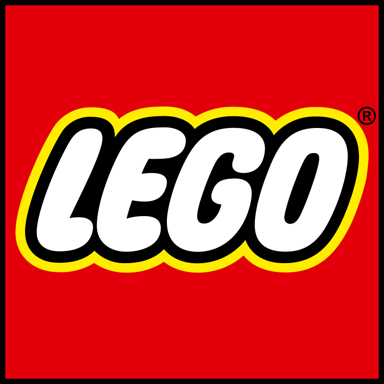

In 1932, OleKirk Christiansen first began making toys. In 1934, he named his toy company "LEGO," named after the phrase Danish "leg godt," meaning play well. Soon after, LEGO began to grow in popularity. By 1968 the first LEGOLAND theme park was opened, and in 1998 LEGO was inducted into the US National Toy Hall of Fame. Today, LEGO has released around 15,500 sets with themes ranging from architectural scenes to major pop culture franchises like Harry Potter and Disney. This visualization aims to explore how LEGO sets have evolved over the past 70 years.
